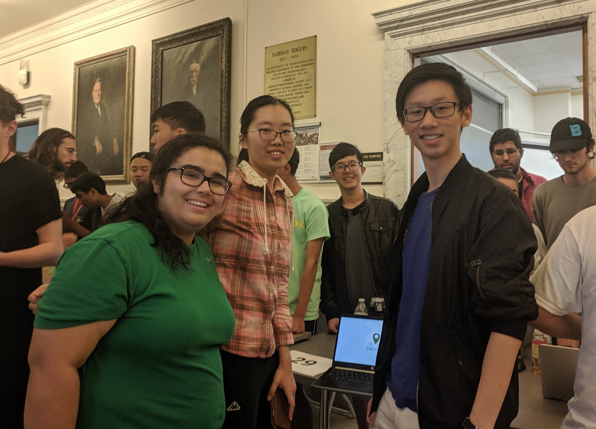
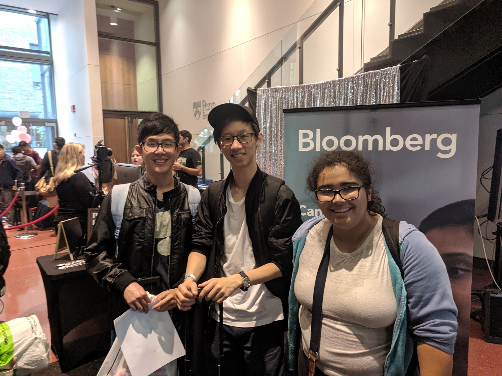

Predictive Forecast Machine Learning
StillSpace is an Android application which shows study space hotspots and current usage, crowdsourced from students who recently studied in the area and processed with machine learning.
The project was created during September 6-8, 2019 for PennApps XX Fall 2019, at the University of Pennsylvania - a 36 hour hackathon, the 20th iteration of the first-ever student hackathon, and one of the largest in the world with 1200 attendees.

The Inspiration
Inspiration...
Solution
Our solution is...
Screens
The System
Description...
Android Application
The mobile application on Android was the user-facing section of StillSpace, providing a locator and predictor for study space availability as well as tracking location data during studying.
Download the application on the Google Play Store here.
The application utilizes Google Location Services as well as Google Maps Heatmap Utility, an advanced and less-known Play Services API.
The map view is set to automatically display Towne Building in the Engineering Division at the University of Pennsylvania, as this was the location of the hackathon and demo.
Graphic Design (Figma and Zeplin)

To visually understand how users would navigate and use the application, graphic designs were created using Figma and passed to the developers with Zeplin.
Machine Learning (Amazon Web Services Forecast)

The machine learning component of StillSpace utilizes Amazon Web Services Forecast, an online machine learning service which processes trends in time series data to predict future forecasts.
Using Amazon Forecast also entailed creating an Amazon S3 bucket which contained a CSV file to be imported.
We encountered heavy limitations when working with the machine learning framework. First, a sufficient amount of suitable sample data which mimicked actual conditions was incredibly difficult to generate. Second, there was not nearly enough time and data to train the network sufficiently well in a single weekend. Third, we initially hoped on having the data be automatically uploaded to the server and to configure the machine learning to be run on the dataset on a set recurring schedule. Unfortunately, the Amazon Forecast API is still greatly under development, and did not have this capability. Instead, each dataset needed to be run automatically using the web console.
The services available for machine learning are still in the process of being developed and made ready for public use but, when ready, they will empower even students to easily be able to find valuable trends across vast datasets.
Pitch
Watch a video of our pitch here:
About the Team
The creators of this project are Jeffrey Leung, Joseph Chao, Michelle Swolfs, and Funing Yang. Disclaimer: This page was created after the hackathon's completion.